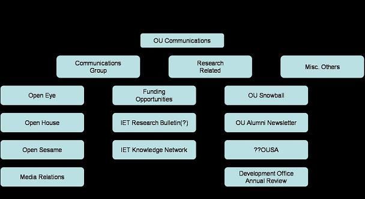

An interesting post - IBM: Untangling Office Connections - from a blog I've only just subscribed to (ELSUA~A KM Blog - "A blog about Knowledge Management, Communities of Practice, Collaboration, Social Networking and Work/Life Balance") on the use of social network analysis in identifying the informal networks that allow an organisation to work.
(Who was it told me that the aftershock of an institutional reorganisation can take a year or to subside until the informal networks are working again..?!)
Anyway - I was wondering - whose role is it in an organisation to keep tabs on the knowledge flows/pathways (at least the formal ones), and where would I expect to go to find a map of those pathways? The communications department, perhaps? Or the library? As for mapping the informal pathways - perhaps that's too much to ask... although the bloggers may provide an entry point?
PS here's a chart of the formal OU communications channels I was aware of a year or so ago (hmmm - the alignment of the various objects appears to be broken...):

Looking at it, there's a couple of things I notice are missing - such as the intranet noticeboard and the OU screensaver. Time for a revision perhaps..?